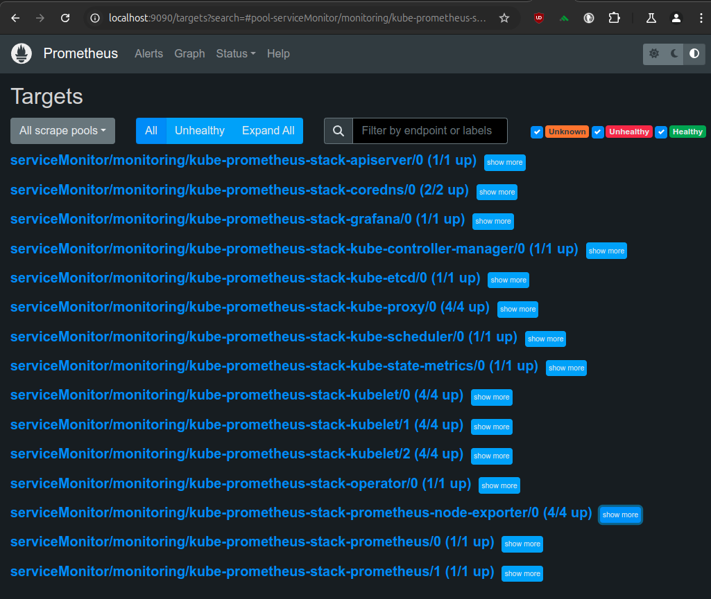
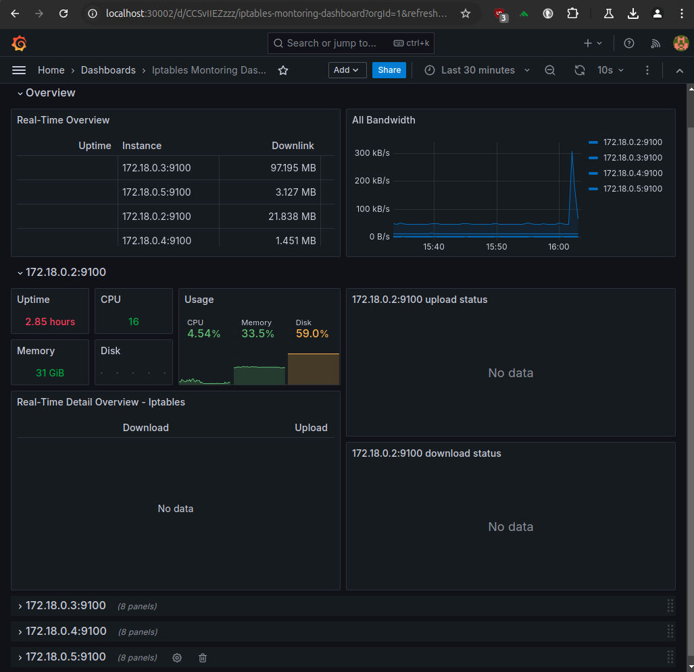
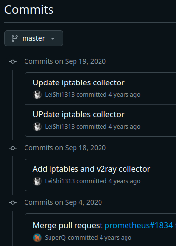
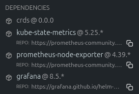
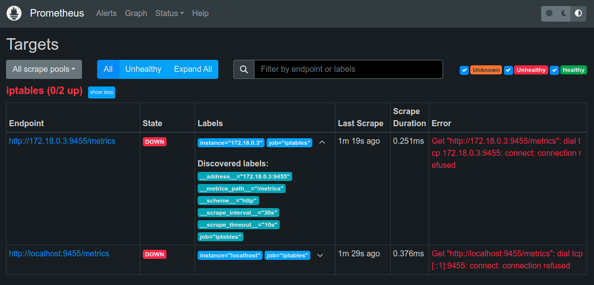

iptables를 수집하여 Grafana로 표현하는 방법을 알아봅니다.
CloudNet@에서 진행하고 있는 K8s Advanced Network Study(이하, KANS)를 통해 학습한 내용을 정리합니다.
0. 환경 구성 (kind)
작성시간 이슈로 featureGates, ConfigPatches, networking 설정 설명은 스킵…합니다.
a. 1 Master, 3 Slave 환경 구성
cat <<EOT> kind-svc-1w.yaml
kind: Cluster
apiVersion: kind.x-k8s.io/v1alpha4
featureGates:
"InPlacePodVerticalScaling": true
"MultiCIDRServiceAllocator": true
nodes:
- role: control-plane
labels:
mynode: control-plane
topology.kubernetes.io/zone: ap-northeast-2a
extraPortMappings:
- containerPort: 30000
hostPort: 30000
- containerPort: 30001
hostPort: 30001
- containerPort: 30002
hostPort: 30002
kubeadmConfigPatches:
- |
kind: ClusterConfiguration
apiServer:
extraArgs:
runtime-config: api/all=true
controllerManager:
extraArgs:
bind-address: 0.0.0.0
etcd:
local:
extraArgs:
listen-metrics-urls: http://0.0.0.0:2381
scheduler:
extraArgs:
bind-address: 0.0.0.0
- |
kind: KubeProxyConfiguration
metricsBindAddress: 0.0.0.0
- role: worker
labels:
mynode: worker1
topology.kubernetes.io/zone: ap-northeast-2a
- role: worker
labels:
mynode: worker2
topology.kubernetes.io/zone: ap-northeast-2b
- role: worker
labels:
mynode: worker3
topology.kubernetes.io/zone: ap-northeast-2c
networking:
podSubnet: 10.10.0.0/16
serviceSubnet: 10.200.1.0/24
EOT
kind create cluster --config kind-svc-1w.yaml --name myk8s --image kindest/node:v1.31.0
b. 기본 툴 설치
docker exec -it myk8s-control-plane sh -c 'apt update && apt install tree psmisc lsof wget bsdmainutils bridge-utils net-tools ipset ipvsadm nfacct tcpdump ngrep iputils-ping arping git vim arp-scan -y'
1. prometheus stack 설치 (helm)
a. repository 추가 및 구성
helm repo add prometheus-community https://prometheus-community.github.io/helm-charts
cat <<EOT > monitor-values.yaml
prometheus:
prometheusSpec:
podMonitorSelectorNilUsesHelmValues: false
serviceMonitorSelectorNilUsesHelmValues: false
nodeSelector:
mynode: control-plane
tolerations:
- key: "node-role.kubernetes.io/control-plane"
operator: "Equal"
effect: "NoSchedule"
grafana:
defaultDashboardsTimezone: Asia/Tokyo
adminPassword: kans7969
service:
type: NodePort
nodePort: 30002
nodeSelector:
mynode: control-plane
tolerations:
- key: "node-role.kubernetes.io/control-plane"
operator: "Equal"
effect: "NoSchedule"
defaultRules:
create: false
alertmanager:
enabled: false
EOT
b. 설치
kubectl create ns monitoring
helm install kube-prometheus-stack prometheus-community/kube-prometheus-stack --version 62.3.0 -f monitor-values.yaml --namespace monitoring
c. prometheus 콘솔 접속
새로운 터미널을 열어, port-forwarding을 통해 접속합니다.
# New Terminal
kubectl port-forward svc/kube-prometheus-stack-grafana -n monitoring 9090:9090

골치 아픈 etcd 마저 붙은 걸 알 수 있습니다.
사실, 바로 충돌될 줄 알고, 기대했는데… 저런.
충돌난다면, 주요한 이슈는 맨 위의 kind에서 지정한 port 불일치입니다.
아래를 참고하여 고쳐보세요.
helm upgrade --install \
--namespace monitoring --create-namespace \
--repo https://prometheus-community.github.io/helm-charts \
kube-prometheus-stack kube-prometheus-stack --values - <<EOF
kubeEtcd:
service:
targetPort: 2381
EOF
2. Grafana dashboard 확인
Grafana에 접속해봅시다.
kube-prometheus-stack을 기본 설치하면, node-exporter와 grafana도 함께 설치됩니다.
a. 접속 정보 확인
우선 접속할 ID와 패스워드를 알아야겠죠.
kubectl get secret -n monitoring kube-prometheus-stack-grafana -o jsonpath="{.data.admin-user}" | base64 --decode ; echo
# admin
kubectl get secret -n monitoring kube-prometheus-stack-grafana -o jsonpath="{.data.admin-password}" | base64 --decode ; echo
# kans7969
…이렇게나 위험한걸 다들 쓰고있다니 존경합니다.
b. Port 확인
앞에서 Grafana의 경우 NodePort로 미리 지정했기 때문에, 프로메테우스 때와는 달리 별도의 port-forwarding 설정은 필요없습니다.
kubectl get svc -A -owide | grep NodePort
# monitoring kube-prometheus-stack-grafana NodePort 10.200.1.25 <none> 80:30002/TCP 101m app.kubernetes.io/instance=kube-prometheus-stack,app.kubernetes.io/name=grafana
위의 경우에는 kind를 구성한, 컴퓨터의 브라우저에서 localhost:30002로 접속하면 됩니다.
c. Dashboard 확인
- Dashboard(13674): Grafana Labs
음 역시. 뭐가 많이 부족하죠? 각 노드의 iptables rule과 io up/down이 확인이 안되네요.

이제 이걸해야됩니다.
3. iptables exporter 설정
a. 원인 안내
간단합니다. 해당 대시보드 템플릿 안내문에, 템플릿 작성자가 따로 포크떠서 작성한 node-exporter를 안내하고 있기 때문이죠. Wow!
그래도 안내라도 있어서 다행입니다. 한번 볼까요?
- (LeiShi1313/node_exporter): https://github.com/LeiShi1313/node_exporter/commits/master/

뭔가 바뀐거도 보이고… 아무래도 어떻게든 yaml에 때려넣어야하는 걸까… 고민하게 됩니다.
b. 고민해봅시다, 무엇을?
helm을 쓰는 대다수의 사용자들은 알 필요도 없고… 알 겨를도 없는 사항인데,
헬름 차트에도 그 뭐냐, dependency라는 것이 존재하는데요.
최신문서 기준 아래와 같이 아 맞다 의존성이지. 의존성이 걸려있는 것을 알 수 있습니다.

음 읽고 더 미궁 속으로 빠집니다. 의존성 이름이 prometheus-node-exporter … 음 큰일났네요.
c. 그래도 그냥 더 볼까
일단 지금까지 태운 시간이 아까우니, 계속 봅니다.
대시보드 기준으로 누락된 위젯에서 어떠한 값을 요청하는지 살펴봅니다.
increase(node_iptables_download_bytes_total{job=~"$job",instance=~"$instance"}[$__range])increase(node_iptables_upload_bytes_total{job=~"$job",instance=~"$instance"}[$__range])irate(node_v2ray_download_bytes_total{job=~"$job",instance=~"$instance",dimension=~"$dimension",target=~"$target"}[5m])irate(node_v2ray_upload_bytes_total{job=~"$job",instance=~"$instance",dimension=~"$dimension",target=~"$target"}[5m])irate(node_v2ray_download_bytes_total{job=~"$job",instance=~"$instance",dimension=~"$dimension",target=~"$target"}[5m])irate(node_iptables_download_bytes_total{job=~"$job",instance=~"$instance",chain=~"$dimension",rule=~"$target"}[5m])
역시, 누락된 위젯은 죄다 커밋내역과 연동된 내용이네요. 특히 v2ray 또한, 따로 GitHub repository가 있습니다.
이제 선택지는 얼마 없는 것 같습니다.
p8s에서 target 살펴봤을때 없는 걸 보니, 활성화해서되면 okay 안되면… GG
A안) 기존 node-exporter를 활성화하여 사용.
말이 되지 않음. 원본 node-exporter에는 v2ray 같은 건 있지 않았음.B안) 기존 helm 차트를 수정하여 node-exporter 참조 경로를 사용.
그런, 험한거 하면 안될 것 같네요.- C안) 뭔가 신비하고 놀라운 Discussion을 통해, 그저 더 삽질하기…
이걸로… 해볼께요.
이걸 보니, 뭔가 심연을 느끼기 시작합니다. 빨리 도망쳐
This horrifying cron one liner when set as a cron simulates an iptables exporter. At least on debian buster/stretch it does. It gives more or less the same output as the dedicated iptables exporter. It just uses awk to process the output of iptables-save -c into something prometheus can understand, and pops it in the folder the node exporter monitors.
SCRAPE_INTERVAL=15
OFFSET_INTERVAL=5
* * * * * root sleep $OFFSET_INTERVAL; for i in $(seq $SCRAPE_INTERVAL $SCRAPE_INTERVAL 60); do /usr/sbin/iptables-save -c | grep -v '^#' | grep -v 'COMMIT' | sed -e s'/\[//g;s/\]//g' | awk -F'[ :]' '{ if($0 ~ /\*/) { table=$0; gsub("^*","",table); } else if($0 ~ /^\:/){ print "iptables_rule_bytes_total{chain=\"" $2 "\",policy=\"" $3 "\",table=\"" table "\"} " $5 "\niptables_rule_packets_total{chain=\"" $2 "\",policy=\"" $3 "\",table=\"" table "\"} " $4; } else { rule=$5; for(i=6;i<=NF;i++){rule=rule" "$i} print "iptables_rule_bytes_total{chain=\"" $4 "\",rule=\"" rule "\",table=\"" table "\"} " $2 "\niptables_rule_packets_total{chain=\"" $4 "\",rule=\"" rule "\",table=\"" table "\"} " $1; } }' > /var/lib/prometheus/node-exporter/iptables.prom; echo "iptables_scrape_success $(date +\%s)" >> /var/lib/prometheus/node-exporter/iptables.prom; sleep $SCRAPE_INTERVAL; done
아저씨 말씀으로 된다니, 그냥 빠르게 다른 걸 더 찾아봅니다. $(date +\%s)를 쓰면 그 로그는 조상님께서 없애줄거냐며
사실 뭐 discussion에서 permission 언급되길래 찾아보니, pypi/iptables-exporter도 나오고 뭔가 어지러워보이다가 명료하게 권한 언급되는걸 봐서 해보기로 했습니다.
d. Do… It
권한
- 총 3개의 권한을 허용해야합니다.
- CAP_DAC_READ_SEARCH
- CAP_NET_ADMIN
- CAP_NET_RAW
권한의 적용
retailnext/iptables_exporter- GitHub
- 첫 구절을 보면, 친절하게 systemd 옵션 재설정이 필요하다고 합니다.
Unfortunately, iptables-save (which this exporter uses) doesn’t work without special permissions.
Including the following systemd [Service] options will allow this exporter to work without running it as root:
CapabilityBoundingSet=CAP_DAC_READ_SEARCH CAP_NET_ADMIN CAP_NET_RAW
AmbientCapabilities=CAP_DAC_READ_SEARCH CAP_NET_ADMIN CAP_NET_RAW
kbknapp/iptables_exporter- GitHub
- 권한 부분 외에는 따라해볼만 하고, 커밋 기준 최신이어서 시도를 해봅니다.
- buggy 한 것은 어쩔 수 없을 듯 합니다.
iptables_exporter 설치
가만 생각해보니 어차피 root로 접속하니, 되는지 정도만 보는 걸로 해봅니다.
rust-toolkit은 생경하니, 바이너리(x86_64) 파일을 받아서 해봅니다.
docker exec -it myk8s-worker bash
root@myk8s-worker:/# echo $PATH
# /usr/local/sbin:/usr/local/bin:/usr/sbin:/usr/bin:/sbin:/bin
root@myk8s-worker:/# cd /tmp
root@myk8s-worker:/tmp# curl https://github.com/kbknapp/iptables_exporter/releases/download/v0.4.0/iptables_exporter-v0.4.0-x86_64-linux-musl.tar.gz -o iptables_exporter-v0.4.0-x86_64-linux-musl.tar.gz -L
% Total % Received % Xferd Average Speed Time Time Time Current
Dload Upload Total Spent Left Speed
0 0 0 0 0 0 0 0 --:--:-- --:--:-- --:--:-- 0
100 3114k 100 3114k 0 0 436k 0 0:00:07 0:00:07 --:--:-- 641k
root@myk8s-worker:/tmp# tar -xvf iptables_exporter-v0.4.0-x86_64-linux-musl.tar.gz ./iptables_exporter
./iptables_exporter
root@myk8s-worker:/tmp# mv iptables_exporter /usr/bin
root@myk8s-worker:/tmp# iptables_exporter -V
iptables_exporter v0.4.0 (f8d6fca92a)
root@myk8s-worker:/tmp# rm *
root@myk8s-worker:/tmp# cd -
/
root@myk8s-worker:/#
systemD 등록
이제 background로 실행할 수 있도록 systemd에 등록합니다.
root@myk8s-worker:/# cat <<EOT > /etc/systemd/system/iptables_exporter.service
[Unit]
Description=iptables_exporter
After=network.target
[Service]
Type=simple
ExecStart=/usr/bin/iptables_exporter
Restart=always
RestartSec=5
CapabilityBoundingSet=CAP_DAC_READ_SEARCH CAP_NET_ADMIN CAP_NET_RAW
AmbientCapabilities=CAP_DAC_READ_SEARCH CAP_NET_ADMIN CAP_NET_RAW
[Install]
WantedBy=multi-user.target
EOT
# permission
root@myk8s-worker:/# chmod a+x /etc/systemd/system/iptables_exporter.service
reload 후, 상태 체크
root@myk8s-worker:/# systemctl daemon-reload
root@myk8s-worker:/# service status iptables_exporter
status: unrecognized service
root@myk8s-worker:/# service iptables_exporter status
○ iptables_exporter.service - iptables_exporter
Loaded: loaded (/etc/systemd/system/iptables_exporter.service; disabled; preset: enabled)
Active: inactive (dead)
root@myk8s-worker:/# service iptables_exporter start
root@myk8s-worker:/# service iptables_exporter status
● iptables_exporter.service - iptables_exporter
Loaded: loaded (/etc/systemd/system/iptables_exporter.service; disabled; preset: enabled)
Active: active (running) since Sun 2024-09-29 17:06:54 UTC; 2s ago
Main PID: 8697 (iptables_export)
Tasks: 1 (limit: 5729)
Memory: 1.3M
CPU: 13ms
CGroup: /system.slice/iptables_exporter.service
└─8697 /usr/bin/iptables_exporter
Sep 29 17:06:54 myk8s-worker systemd[1]: Started iptables_exporter.service - iptables_exporter.
Sep 29 17:06:54 myk8s-worker iptables_exporter[8697]: 2024-09-29T17:06:54.686186Z INFO iptables_exporter: Registering metrics...
Sep 29 17:06:54 myk8s-worker iptables_exporter[8697]: 2024-09-29T17:06:54.686280Z INFO iptables_exporter: Spawning server...
Sep 29 17:06:54 myk8s-worker iptables_exporter[8697]: 2024-09-29T17:06:54.686338Z INFO iptables_exporter: Collecting iptables metrics...
Sep 29 17:06:54 myk8s-worker iptables_exporter[8697]: 2024-09-29T17:06:54.687570Z INFO iptables_exporter: Collecting iptables metrics...
root@myk8s-worker:/# exit
scrape_config 설정
이제 위에서 사용했던, monitor-values.yaml을 수정합니다.
cat <<EOT > monitor-values.yaml
prometheus:
prometheusSpec:
podMonitorSelectorNilUsesHelmValues: false
serviceMonitorSelectorNilUsesHelmValues: false
nodeSelector:
mynode: control-plane
tolerations:
- key: "node-role.kubernetes.io/control-plane"
operator: "Equal"
effect: "NoSchedule"
additionalScrapeConfigs: |
- job_name: 'iptables'
static_configs:
- targets: ['localhost:9455', '172.18.0.3:9455']
relabel_configs:
- source_labels: [ '__address__' ]
regex: '(.*):\d+'
target_label: instance
grafana:
defaultDashboardsTimezone: Asia/Tokyo
adminPassword: kans7969
service:
type: NodePort
nodePort: 30002
nodeSelector:
mynode: control-plane
tolerations:
- key: "node-role.kubernetes.io/control-plane"
operator: "Equal"
effect: "NoSchedule"
defaultRules:
create: false
alertmanager:
enabled: false
EOT
helm upgrade --install \
--namespace monitoring --create-namespace \
--repo https://prometheus-community.github.io/helm-charts \
kube-prometheus-stack kube-prometheus-stack --values monitor-values.yaml
다시 살펴보니.. 역시 에러가 나있는 군요.
포트 안 열려있어서 그런거 같은데, 일단 자야겠습니다.

Reference
https://medium.com/@charled.breteche/kind-fix-missing-prometheus-operator-targets-1a1ff5d8c8ad
https://sbcode.net/prometheus/prometheus-node-exporter-2nd/
https://www.crybit.com/install-and-configure-node-exporter/
https://docs.redhat.com/ko/documentation/red_hat_enterprise_linux/7/html/system_administrators_guide/sect-managing_services_with_systemd-unit_files#sect-Managing_Services_with_systemd-Unit_File_Create

kkumtree
Source code on GitHub
© 2025 kkumtree and contributors All rights reserved.
Licensed under
CC BY-NC-ND 4.0